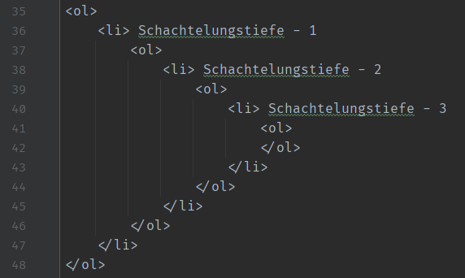

Aufgabe 1.1 Fachliche Argumentation über Erfolgsprinzipien des WWW
Mit welchen fachlichen Argumenten wurde das WWW-Proposal von TBL abgelehnt?
Das ist nicht das, was sie sich unter "Hypertext" vorgestellt hatten. Sondern: Keine Möglichkeit für
Broken-Links:
"Es solle alles sauber sein".
Es wurde außerdem als "zu vage" verstanden: Verwechslung mit Evolvierbarkeit!
Was sind die fachlichen Argumente, warum das WWW dennoch ein Erfolg wurde?
Das WWW-Konzept wurde von Marc Andreesen, NCSA, entdeckt. Durch ihn
konnte der erste W3-Browser gebaut werden (Mosaic).
→ Dadurch wurde die erste W3-Konferenz gehalten und die Gründung des W3-Consortium eingeleitet.
Was wäre der Preis für die garantierte Verhinderung von “broken links”?
Referenzielle Integrität sollte bewahrt sein
⇒ Preis: Zeit. Man müsste, vor allem beim Löschen, überall
"Fremdschlüssel" entsprechend aktualisieren, die auf das gelöschte Element zeigten.
Bei einem WORLD-wide-web mit extrem vielen Websites wäre so ein Vorgang viel zu langsam.
Aufgabe 1.2 HTTP
Status Code 200: "OK"
→ Anfrage richtig verarbeitet.
Status Code 301: "Moved Permanently"
→ Die URL wurde permanent geändert und die Neue wird im Response angegeben.
Status Code 400: "Bad Request"
→ Fehlerhafte Anfrage des Clients. Der Server führt die Request nicht aus.
Status Code 403: "Forbidden"
→ Keine Zugriffsrechte.
Verbesserungen der Performanz von häufigen OPTIONS-Anfragen:
→ Die cacheable Methode "GET" verwenden, um die OPTIONS zu cachen.
Aufgabe 1.3 HTML-Literatur lesen und Fragen beantworten
Was ist HTML?
HTML steht für Hyper Text Markup Language und ist der Standard für
die erstellung von Webseiten.
Es beschreibt die Struktur der Webseite mithilfe von Elementen,
die dem Browser zeigen, wie etwas dargestellt werden soll.
Wie kann man eine geschachtelte geordnete Liste der
Schachtelungstiefe 3 erzeugen?
Code
Beispiel

Schachtelungstiefe - 1
Schachtelungstiefe - 2
Schachtelungstiefe - 3
Wie ist eine HTML-Tabelle aufgebaut?
Eine HTML-Tabelle beginnt mit dem Tag <table> (</table>).
Eine Reihe wird mit <tr> (</tr>) (Table Row) erstellt und ein Element mit <td> (</td)
(Table Data).
Eine Spaltenüberschrift erstellt man mit <th> (</th>) (Table Header)
Welche Konventionen sollte man bei Pfaden und Dateinamen beachten?
Immer lower-case filenames benutzen. Sonst kann es Probleme mit einigen Web-Servern geben,
die Case sensitive sind.
HTML files sollten immer .html (oder .htm) als File-Extension haben.
CSS files sollten immer .css als File-Extension haben.
JavaScript files sollten immer .js als File-Extension haben.
Die default Seite sollte index.html oder default.html heißen
Bei Pfaden: Bedenken ob man absolute oder relative Dateipfade angibt!
Die Dateien sollten außerdem nicht den Ort wechseln während man sich auf der Seite befindet.
Wie baut man in HTML ein Menü?
Man kann mit Listen und Links sich ein Menü zusammenbauen, der dann auf die anderen
HTML-Dokumenten zeigt.
Welche Attribute sollte man bei Bildern wie verwenden?
<img>: Tag für das einbetten von Bildern. Keine schließenden Klammern.
src: URL des Bildes. (Source)
alt: Text der dargestellt wird, wenn es einen Fehler in der src, eine langsame Verbindung,
oder der User ein Screen-Reader benutzt.
width/height: Breite und Höhe des Bilds in pixeln. W3School empfiehlt allerdings style
CSS float benutzen, um das Bild neben dem Text darstellen zu lassen.